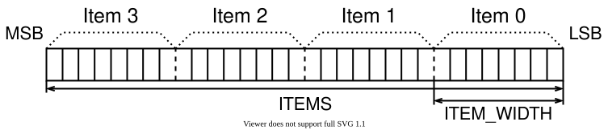
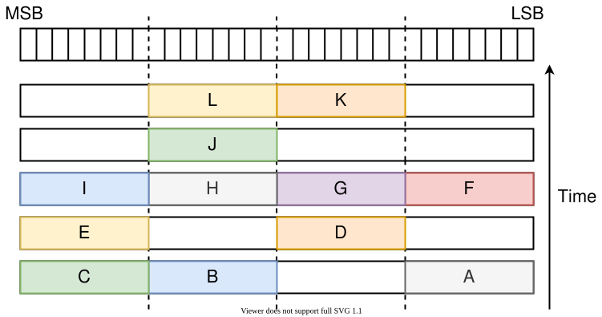
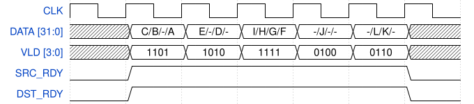
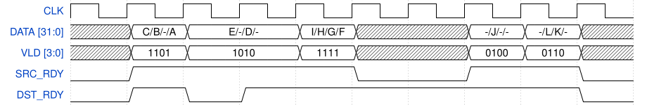

MVB Specification¶
Multi-Value Bus (MVB) has been created as a communication channel able to process multiple data in one clock cycle. This bus is often used as a separate channel to transfer fixed length meta-data for the data transmitted on the MFB bus. Therefore both of these buses are often used together as one communication channel.
Operation¶
Data are transmitted in units called words which consist of the specified amount of items. The maximum amount of items, which can be transmitted in one clock cycle, is set during the creation of the bus. Not all items have to necessary contain valid data, the gap may occur between them. The data always occupy the whole item.
To simplify the design of components which are participating in the communication process, the amount of items in the word have to be limited to specific values. Same rule applies also to the length of the items. Allowed values depend on the application being used.
Generic parameters¶
Name |
Type |
Example value |
Note |
|---|---|---|---|
ITEMS |
natural |
4 |
Amount of items in a word |
ITEM_WIDTH |
natural |
8 |
Amount of bits within each item |
Note
The length of a whole word is calculated as WORD_WIDTH = ITEMS * ITEM_WIDTH. This constant can be used to simplify declarations of some internal signals.
Items are distributed evenly within the word. This is described in bigger detail in the following picture (word parameters are set according to example values given in the table above) [1]:
{kind=link}

Example of the item arrangement within a word¶
Port description¶
Port name |
Bit length |
Direction |
Description |
|---|---|---|---|
DATA |
WORD_WIDTH |
Transmitter -> Receiver |
Transmitted data |
VLD |
ITEMS |
Transmitter -> Receiver |
Bit mask indicating validity of each item |
SRC_RDY |
1 |
Transmitter -> Receiver |
Asserted when transmitter is ready to send data |
DST_RDY |
1 |
Receiver -> Transmitter |
Asserted when receiver is ready to accept data |
Following examples will be demonstrated on the configuration of ITEMS = 4 and ITEM_WIDTH = 8. The assertion of a single bit inside the VLD signal signifies that there are valid data being transmitted within the respective item. On the other hand, the deassertion of a single bit inside the VLD signal stands that there are no valid data within the respective item. The DATA value in such item can be arbitrary.
Examples of various VLD signal values¶
The value of VLD = 1110 means, that three valid items are transmitted in current word. Their indexes are 3, 2 and 1.
The value of VLD = 0000 means, that there are no valid items in the currently transmitted word (in this case, the SRC_RDY signal have to be deasserted, see below).
The value of VLD = 0001 means, that there is one valid item being transmitted whose index value is 0.
Transmission of the data can take place only when both SRC_RDY and DST_RDY signals are asserted. The presence of these signals could be understood as the application of a simple handshaking mechanism.
Timing diagrams¶
Two timing diagrams will be shown in this section. These diagrams describe how a MVB transmission is performed in terms of waveforms. Example of MVB transactions are shown in the following figure:
{kind=link}

Examples of MVB transactions¶
In next sections, two scenarios will be provided showing how these transactions can be transferred.
Scenario 1¶
{kind=link}

In this figure all transactions are transmitted consecutively without any idle or gap. Transmission starts when both SRC_RDY and DST_RDY are asserted.
Scenario 2¶
{kind=link}

This figure shows how pauses in transmission could be conducted. The first pause takes place when DST_RDY signal is deasserted when data on the bus DATA are still valid. In second case the pause is performed via deassertion of the SRC_RDY signal when data on the DATA bus are considered invalid.